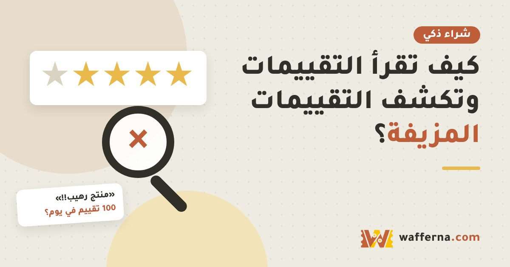

كيف تقرأ تقييمات المنتجات وتكشف التقييمات المزيفة

التقييمات من أهم ما نعتمد عليه، لكن بعضها مكتوب بطلب من البائع أو مدفوع. القراءة الذكية تفرق بين رأي حقيقي ودعاية.
علامات التقييم المزيف
- عدد كبير من تقييمات الخمس نجوم في فترة قصيرة جداً.
- عبارات عامة متشابهة مثل «منتج ممتاز أنصح به» بدون أي تفاصيل.
- لا توجد صور أو تفاصيل استخدام حقيقية.
- حسابات المقيّمين ليس لها نشاط سوى تقييم هذا المنتج.
- مبالغة واضحة أو لغة دعائية تشبه الإعلان.
طريقة القراءة الذكية
- ابدأ بتقييمات النجمتين والثلاث نجوم، فهي غالباً الأكثر صدقاً وتفصيلاً.
- ابحث عن صور وفيديوهات التقطها المشترون أنفسهم.
- انتبه للشكاوى المتكررة. إذا تكررت نفس المشكلة عند كثيرين فهي حقيقية.
- اقرأ أحدث التقييمات وليس الأعلى فقط، فجودة المنتج قد تتغير.
- قارن بما يقال عن المنتج في مواقع أخرى أو مراجعات خارج المتجر.
الخلاصة
لا تحكم من متوسط النجوم فقط. القصص التفصيلية في التقييمات المتوسطة تعطيك الصورة الأقرب للواقع.
هذا المقال معلوماتي عام، ولا يحتوي على روابط تسويقية. الأسعار والأنظمة والمواعيد تتغير، فتأكد منها من المصدر الرسمي قبل أي قرار شراء.